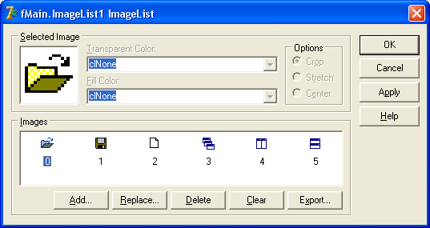
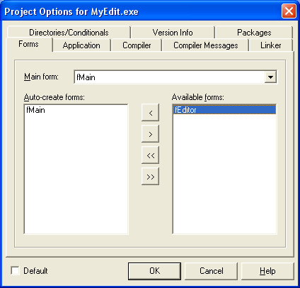
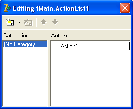
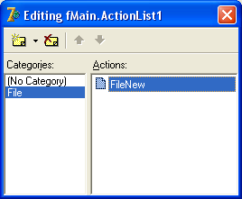
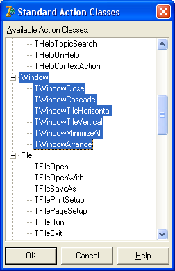
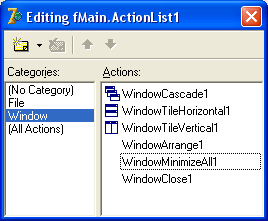

MDI
MDI (Multi Document Interface) – это способ создания многодокументных окон, когда новое, дочернее окно создается внутри главного, и не может выйти за его пределы.
Вспомните, например, пакет MS Office 97, где Word, Excel и другие программы открывали файл в окне, которое находилось внутри главного окна.
Если вам доводилось видеть самый распространенный сегодня продукт для бухгалтерского учета "1С Предприятие", то вы также видели MDI-окна, именно на этой технологии построена эта программа.
Такой способ считается устаревшим и корпорация Microsoft рекомендует не пользоваться им, однако во многих случаях он является наиболее удобным способом.
Например, сама Microsoft, несмотря на собственные рекомендации, использует эту технологию.
Нажмите "Пуск - Выполнить".
В окне для ввода команды наберите "MMC" (разумеется, без кавычек, латинскими символами).
Появится MDI -окно Консоли управления системой, которое находится внутри главного окна, и не может выйти за его пределы.
Изучение MDI -окон лучше всего делать на практике, чем мы сейчас и займемся.
Создайте новое приложение.
Мы будем делать многооконный редактор текстов, который позволит обрабатывать несколько текстовых файлов одновременно, переключаться между ними.
Свойство Name формы переименуйте в fMain.
В свойстве Caption напишите "Текстовый редактор MyEdit".
Сохраните проект в отдельную папку, модуль назовите Main, а проект в целом – MyEdit.
Теперь в свойстве Position выберите poDesktopCenter, чтобы форма появлялась по центру Рабочего стола.
Обратим внимание на свойство FormStyle.
Это свойство отвечает за стиль формы, по умолчанию установлено fsNormal (обычное).
До сих пор мы не меняли его, для большинства окон такое значение свойства как раз и нужно.
Но сейчас мы делаем главное окно многодокументного приложения, поэтому выберите для FormStyle значение fsMDIForm (главное MDI-окно).
Для дочернего MDI-окна мы в дальнейшем будем выбирать значение fsMDIChild.
На форму установите компонент ControlBar с вкладки Additional, установите у него свойство Align равное alTop, а свойство AutoSize в True.
Теперь поверх ControlBar установим компонент ToolBar с вкладки Win32.
В свойстве EdgeBorders этого компонента переведите в False подсвойство ebTop, чтобы убрать верхнюю оборку.
Свойство AutoSize и Flat также установим в True.
Также обратите внимание на свойство ShowHint этого компонента.
При значении True, оно позволяет выводить подсказку для кнопок, расположенных на этой панели инструментов, при наведении на них указателя мыши.
Установим True в этом свойстве.
Не забывайте время от времени сохранять проект.
Так, панель инструментов у нас уже есть, кнопки будем создавать по ходу работы.
Поочередно установите на форму главное меню (MainMenu), всплывающее меню (PopupMenu) и ActionList с вкладки Standard, добавьте компонент ImageList с вкладки Win32.
Далее установите диалоги OpenDialog и SaveDialog с вкладки Dialogs.
Все это компоненты невизуальные, поэтому можно их поместить на любое свободное место формы.
Начнем с компонента ImageList, так как картинки нам понадобятся и для обеих меню, и для панели инструментов.
Команды, которые будет выполнять программа, будут следующими: открыть файл, сохранить, создать, выравнивать окна каскадом, горизонтально и вертикально.
Все эти команды будут сопровождаться изображениями, поэтому придется подобрать соответствующие картинки, например:
Подберите такие же или похожие изображения, или создайте их самостоятельно и добавьте в ImageList под теми же индексами.
Приготовление главного окна программы почти закончено, теперь нам понадобится создать дочернее окно, в котором будет находиться сам редактор текстов.
Выполните команду "File – New – Form", чтобы создать новое окно.
Свойство Name новой формы переименуйте в fEditor (так будем называть наш редактор), в свойстве Caption напишите "Дочернее окно".
Свойству FormStyle выберите значение fsMDIChild.
Сохраните этот модуль как Editor.
Теперь попробуйте скомпилировать проект и запустить программу на выполнение.
Сразу видны недостатки: дочернее окно появляется сразу же, а при попытке его закрыть, оно просто сворачивается.
Нас это не устраивает, ведь нам нужно открывать это окно по команде, а при закрытии уничтожать его.
Исправить это можно.
Закройте программу (но не проект!).
Выберите команду меню Project – Options.
У вас откроется окно, в котором можно задавать некоторые настройки проекта в целом.
В левой части окна, в поле "Auto-create forms" выведен список форм проекта, которые создаются автоматически.
Выделите название дочерней формы fEditor, нажмите на кнопку со стрелкой вправо, чтобы переместить ее в поле "Available forms":
Теперь эта форма не будет создаваться автоматически, нам придется делать это вручную.
Теперь нужно будет исправить и закрытие этой формы, чтобы она не сворачивалась, а действительно закрывалась.
Для этого выделите дочернюю форму, создайте для нее обработчик события onClose и впишите туда следующий код:
Action := caFree;
Таким образом, при попытке закрыть форму, мы уничтожаем объект, которым эта форма является.
Пойдем дальше.
На этой форме нам не потребуются ни меню, ни панель инструментов.
Установите на нее только компонент Memo, очистите весь текст в свойстве Lines, а свойство Align переведите в alClient, чтобы компонент занял всю форму.
Не забудьте сохранить проект.
Дочерняя форма готова, переходим снова к главной форме.
Вы заметили, что нам не пришлось выполнять команду меню "File – Use unit", чтобы главная форма видела дочернюю?
Когда вы делаете MDI-приложение, дочерняя форма уже будет видна из главной, однако теперь она не создается автоматически, поэтому нам придется все же выполнить эту команду.
Выделите главную форму, выполните команду меню "File – Use unit" и выберите модуль Editor, чтобы его можно было запустить на выполнение из главного окна.
Сейчас займемся компонентом ActionList.
Вначале свяжем его с нашей коллекцией рисунков.
Выделите компонент, и в свойстве Images выберите наш ImageList.
Далее дважды щелкните по ActionList, чтобы открыть редактор действий.
Появится окно редактора, разделенное на две области.
Область Categories содержит категории действий, а область Actions – сами действия.
Создадим новое действие.
Для этого щелкните правой кнопкой по области Actions и выберите команду New Action (новое действие).
Действие создастся:
По умолчанию, действие имеет имя Action1.
Выделите это действие и переименуйте его свойство Name в FileNew.
Теперь настроим это действие.
В свойстве Caption напишите "Новый", это действие будет открывать окно редактора с новым документом.
В свойстве Category напишите "File", в этой категории будем хранить все действия, связанные с командой меню "Файл".
Сразу же наше действие исчезло из окна – создана новая категория, и действие перенесено в нее.
Выберите File в области Categories, а в области Actions снова выделите наше действие.
Теперь нас интересует свойство Hint – строка подсказки, которая выскакивает при наведении указателя мыши на объект.
Подсказка выскакивает, если свойство ShowHint объекта установлено в True, мы это сделали только для панели инструментов.
Значит, подсказки будут выходить только для кнопочек.
В свойстве Hint напишите следующее: "Создать новый файл".
Следующее интересное свойство – ImageIndex, оно показывает индекс изображения для выбранного действия.
Когда вы откроете свойство, откроется список картинок, из которых можно выбрать нужную:
Действие мы подготовили, однако оно работать просто так не будет.
Чтобы заставить действие работать, нужно на вкладке Events (События) создать для него обработчик события onExecute.
Щелкните дважды по этому событию, и напишите в нем следующий код:
fEditor := TfEditor.Create(Owner); //создаем новое окно
Переменная fEditor была объявлена в разделе глобальных переменных дочерней формы:
var fEditor: TfEditor;
С помощью функции Create() мы создаем новый объект (форму), и присваиваем его этой переменной.
То есть, создаем дочернюю форму вручную.
Таким же образом вы сможете создавать в дальнейшем другие дочерние окна, указывая их идентификатор.
Действие создано.
Теперь создадим кнопку на панели инструментов, которая будет выполнять это действие.
Выделите панель инструментов ToolBar, в свойстве Images укажите наш ImageList, чтобы панель использовала те же изображения, что и ActionList.
Теперь щелкните по панели правой кнопкой, выберите команду "New Button".
Появилась новая кнопка.
Выделите ее, и в свойстве Action выберите наше действие – FileNew.
Сейчас же на кнопочке появилось нужное изображение, и теперь нажатие на нее приведет к созданию нового дочернего окна.
Сохраните проект, скомпилируйте его и выполните.
Несколько раз нажав на кнопку, вы создали несколько дочерних окон с редактором.
Закрытие дочернего окна уже не сворачивает его, а уничтожает.
Привяжем это же действие к пункту главного меню.
Выделите MainMenu, в свойстве Images выберите этот же ImageList.
Дважды щелкните по главному меню, чтобы открыть редактор.
Создайте категорию "Файл" и команду "Новый".
В свойстве Action этой команды выберите наше действие FileNew.
Сохраните проект, скомпилируйте и запустите его.
В меню появилась команда "Файл – Новый", которая имеет ту же картинку и выполняет то же действие, что и кнопка на панели инструментов.
Проделаем все те же самые действия для всплывающего меню.
Но здесь нет категорий, поэтому просто создайте команду "Новый".
Не забудьте предварительно привязать к PopupMenu наш ImageList, а к главной форме в свойстве PopupMenu – само всплывающее меню.
Создать новое окно несложно, сложнее открыть уже имеющийся файл.
Снова откройте редактор действий ActionList.
В категории File создайте новое действие, переименуйте его в FileOpen.
Выделите действие, в свойстве Hint напишите "Открыть файл", в свойстве Caption "Открыть", в свойстве ImageIndex выберите подходящую картинку.
В событие onExecute введите код:
if OpenDialog1.Execute then begin
fEditor := TfEditor.Create(Owner);
fEditor.Memo1.Lines.LoadFromFile(OpenDialog1.FileName);
fEditor.Caption := OpenDialog1.FileName;
end; //if
Вначале мы проверяем, выбрал ли пользователь файл?
Если да, то создаем новое дочернее окно.
По умолчанию, оно активно, поэтому можем обращаться к нему по имени переменной fEditor.
Загружаем в Memo выбранный файл, затем в заголовок окна выводим имя файла.
Создайте новую кнопку, привяжите к ней это действие.
Создайте в главном меню команду "Файл - Открыть", привяжите это же действие.
В всплывающем меню создайте команду "Открыть", и привяжите к ней это же действие.
Сохраните, скомпилируйте и запустите проект, попробуйте несколько раз открывать разные текстовые файлы.
Для большего эффекта можете в компонентах OpenDialog и SaveDialog создать фильтры для расширения *.txt.
Для действия FileSave (сохранить файл) код события onExecute будет такой:
//если активного окна нет - выходим:
if ActiveMDIChild = nil then exit;
//если в строке окна есть имя файла, сохраняем в него:
if Length(ActiveMDIChild.Caption)> 0 then
fEditor.Memo1.Lines.SaveToFile(fEditor.Caption)
//иначе спрашиваем, куда сохранять, и сохраняем:
else if SaveDialog1.Execute then begin
fEditor.Memo1.Lines.SaveToFile(SaveDialog1.FileName);
fEditor.Caption := SaveDialog1.FileName;
end; //else if
Как видно из кода, команда ActiveMDIChild будет содержать значение nil (ничего, пусто), если нет ни одного активного окна.
Все остальные операции с этим действием создайте самостоятельно, и привяжите это действие к команде главного меню "Файл – Сохранить", к команде всплывающего меню "Сохранить", к новой кнопке на панели инструментов.
Также самостоятельно создайте действие FileExit (выход из программы), и привяжите его к кнопке и соответствующим пунктам главного и всплывающего меню.
У MDI – приложений есть несколько полезных свойств и методов. Рассмотрим некоторые из них.
ActiveMDIChild – указывает на активное дочернее окно. Например, текст в
ActiveMDIChild.Caption
является заголовком активной дочерней формы.
MDIChildCount возвращает целое число – количество открытых дочерних окон.
MDIChildren позволяет получить доступ к любому, даже неактивному дочернему окну. Например,
MDIChildren[1]
это первое дочернее окно
Напоследок научимся вставлять в ActionList стандартные действия.
Откройте редактор действий.
Щелкните по нему правой кнопкой, и выберите команду "New Standard Action".
Откроется список, в котором можно выбрать категорию и команды действий.
Нам нужна категория Window (Окно).
Выделите эту категорию и следующие команды в ней:
Как только вы нажмете ОК, эти действия попадут в список ActionList, в категорию Window.
Отсортируйте команды следующим образом, и для указанных команд укажите изображения:
По порядку, в свойствах Caption этих действий укажите: "Выравнивание каскадом, Выравнивание горизонтально, Выравнивание вертикально, Упорядочить, Свернуть все, Закрыть окно".
Сделайте соответствующие пункты в разделе "Окно" главного меню, и в свойстве Action этих пунктов присвойте соответствующие команды.
Никакого кода вводить не нужно, он уже содержится в этих командах.
Сохраните проект, скомпилируйте и посмотрите, как он работает.
Новые команды меню будут недоступны, пока нет открытых окон, при открытых окнах ими можно будет пользоваться.
Не написав ни строчки кода, мы организовали обработку окон многооконного проекта, используя стандартные действия ActionList.